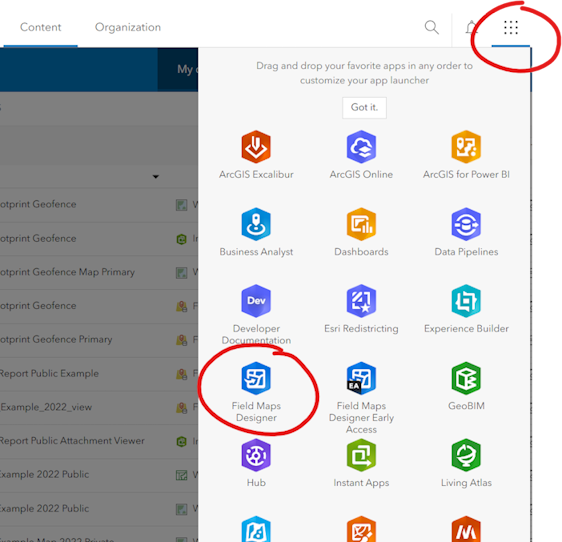
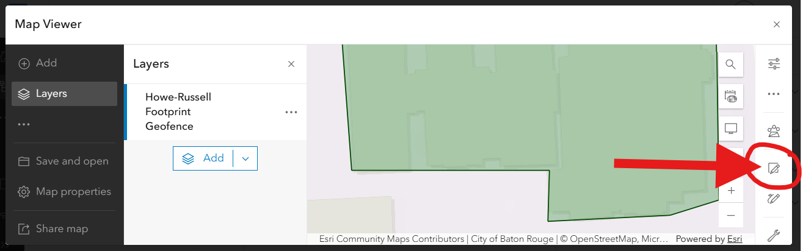

Assignment 6
Build and test a geofence
Create a simple geofence workflow in ArcGIS Field Maps. Your geofence can represent any small local area that is easy and appropriate for you to visit, such as part of campus, a park, a bus stop area, etc.
Table of Contents
Data
The dataset will start empty. You will create a new polygon layer and then add one polygon feature to it. That polygon will serve as the geofence boundary.
Steps
The basic steps in this process are to create a layer, draw a polygon as the geofence area, configure a geofence action, and then test it on your phone by entering or exiting the area.
Part 1: Create a map and polygon layer
- Sign into your ArcGIS Online account.
- Open Field Maps Designer from the app launcher.

- Click
+ New map. - Choose
Start with new layersand clickNext. - Create one layer with a descriptive name for the polygon area, e.g., Howe-Russell Building Footprint
- Set the layer type to
Polygon layer. - Continue through the map creation steps with defaults and give the map a clear title.
- Click
Create mapto finish.
Part 2: Draw the geofence polygon
- You should now see Field Maps Designer, but no map yet.
- Click
Open(bottom left), then chooseOpen in Map Viewer. - Pan and zoom to the local place you chose for this assignment.
- Click the
Editicon on the right side of the Map Viewer.

- Click
New Featureand draw one polygon around the area you want to use as the geofence. - Save the feature by clicking
Create. - Save the map.
Part 3: Configure the geofence
- Return to Field Maps Designer.
- Click
Geofences. - Click
Add geofence. - Give the geofence a clear name.
- In the
Layersmenu, select your polygon layer. - Leave the filter blank, but note it is possible to a polygon layer with multiple features that could be filtered out according to your needs.
- Leave the buffer at
0. - In the
Typemenu, chooseLocation alert. - Check one of the following:
On enter, orOn exit
- In the message box, enter the custom alert message that should appear on the phone.
- Save the geofence.
Part 4: Test the geofence in the Field Maps mobile app
- On your phone, install ArcGIS Field Maps from your app store.
- Sign into the app with the same ArcGIS Online account you used to create the map.
- Open your map in the Field Maps mobile app.
- When prompted, enable location alerts.
- Make sure Field Maps is allowed to use your location and notifications on your phone. If your device asks for physical activity permission, allow that as well. Depending on what you choose here, the action might only be triggered when you have the Field Maps app open on your phone.
- You are now ready to try out the geofence.
If you change the geofence polygon after the map has already been opened on your phone, reload the map in Field Maps before testing again.
Try it
- Travel to your geofence area.
- Cross your geofence boundary to trigger your alert, whether
On enterorOn exit. - If your first test does not trigger when expected, adjust the polygon or add a small buffer in the geofence settings, check that you allowed all permissions, and test again.
- Take a screenshot of the alert triggered at the geofence boundary.
- Optional: Now that you’ve gone through the steps of creating a geofence, feel free to optionally play around with the settings and capabilities of Field Maps Designer, find a new polygon layer with multiple polygons, create multiple geofences, or use variables to show feature layer attribute data in the alert text.
Submit
- One screenshot of the alert shown on your device by the Field Maps app after you tested the geofence in the field.
- A short note stating the place you used for the geofence.
↑ Top
← Back to Assignments